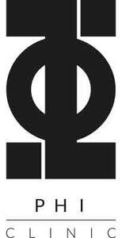

Trade Mark Journal No.2025/042 17 October 2025
UK00004245277 6 August 2025 (3,5,44)

- Class 3
- Preparations for the care and treatment of the body, face, skin and hair; cosmetics; beauty care cosmetics; beauty products and preparations; skincare products and preparations; non-medicated cosmetics; make-up products; make-up preparations; makeup for the face and body; eye cosmetics; non-medical cosmetic preparations; creams, gels and lotions for cosmetic use; make-up foundations; cosmetic foundation; make-up powder; pencils for cosmetic use; eyebrow pencils; eyeliners; eyebrow liners; lip cosmetics; cosmetic kits; cosmetic dyes; non-medicated soaps; non-medicated balms; moisturizing lotions; lotions; moisturizing creams; non-medicated skin creams with permanent make-up; beauty balm creams; beauty care cosmetics; beauty creams; beauty creams for body care; beauty gels; beauty lotions; body lotions; beauty masks; masks for cosmetic use; face masks and scrubs; masks; mud masks; body wraps; skin exfoliators; facial beauty masks; serums and scrubs; beauty serums; serum for skin care and hydration; beauty soap; soaps; body and facial butters; body moisturisers; moisturising creams; body care cosmetics; face cream; body cream; cosmetic and beauty products containing collagen; collagen preparations for cosmetic purposes; eye cream; eye creams for cosmetic use; eye gels; eye balms; preparations for cleansing, moisturising and/or care of the skin or hair; moisturisers; toners; cleansers; facial cleansers; skin cleansers; skin mists; facial toners; skin toners; beauty tonics for application to the body; skin exfoliants; beauty milks; beauty gels; beauty milk; beauty balm creams; beauty masks for hands; distilled oils for beauty care; body cleaning and beauty care preparations; astringents for cosmetic purposes; beauty tonics for application to the face; astringents for cosmetic purposes; cosmetic preparations for mouth and teeth; mouthwashes, not for medical purposes; wrinkle-minimizing cosmetic preparations for topical facial use; beauty serums with anti-ageing properties; age retardant gels; age retardant lotions; anti-ageing creams; anti-ageing moisturisers; anti-aging gels for cosmetic use; anti-ageing serums; anti-aging creams; anti-aging moisturizers; anti-wrinkle creams; cosmetic and skin whitening creams; preparations for skincare before and after pigmentation; Spf sun block sprays; Spf sun block cream; sun creams; cosmetic sun tanning preparations; cosmetic suntan lotions; cosmetic sun oils; suncare lotions, sunscreens, after sun soothers and rehydrators, namely, sun creams, lotions and gels; tanning preparations; sun blocking preparations [cosmetics]; depilatory preparations; depilatory preparations; depilatories; preparations for the hair; hair lotions; hair growth preparations and serums; cosmetic preparations for the care of the scalp.
- Class 5
- Dietary supplements and dietic preparations; nutritional supplements; vitamin and mineral food supplements; dietary substances; dietetic substances adapted for medical purposes; dietary supplements with a cosmetic effect; foods and dietetic substances for medical purposes; dietary and nutritional preparations; pharmaceuticals and medicinal preparations; pharmaceutical products; pharmaceutical preparations for human use; disinfectants, botulinum toxin, anesthetics for surgical and non-surgical purposes; skin care preparations for medical use; therapeutic creams [medical]; medicated creams for skin care; gels, creams and solutions for dermatological use; medicated lotions and creams for the body, skin, face and hands; medicated ointments for application to the skin; pharmaceutical skin lotions; medicinal creams for the protection of the skin; medical and surgical dressings; medical dressings, coverings and applicators; diagnostic preparations for medical purposes; medical infusions; sterile solutions for medical purposes; plasters and materials for dressings.
- Class 44
- Medical services, hygienic and beauty care for human beings; medical clinic providing weight loss solutions, services and programs, nutrition counselling, hormone therapy, including, bioidentical hormone replacement, anti-aging therapy, and natural hormone therapy, medical aesthetic procedures, including, laser hair removal, laser peels, botulinum toxin treatments, microdermabrasion, liposuction, vein treatments, vein therapy, cellulite treatments, body contouring treatments, injectable filler treatments, facials, and skin care; providing medical aesthetic procedures, namely, treating the skin with dermal fillers and botulinum toxin; botulinum toxin treatment services; personal therapeutic services relating to fat dissolution; medical services for treatment of hyperhidrosis, bruxism and migraines; vitamin therapy; medical and therapeutic services in particular in the field of cosmetics, dermatology and nutrition, healthy lifestyle, dietary food and food with health benefits; treatment of cellulite; liposuction; hospital services; sanatoriums; clinics; physical therapy; cosmetic and plastic surgery; chiropractics; alternative medicine services; medical advice services; medical advice on cosmetics, dermatology and nutrition, a healthy lifestyle, dietary food and food with health benefits; weight reduction diet planning services (medical services); consultancy in the field of cosmetics; cosmetic treatment services for the human body; application of face and body care cosmetics; cosmetic treatment services; cosmetic dentistry; whitening of teeth; orthodontic services; hair removal services; hairdressing salons; beauty salons; beautician's services; hair implants; aesthetic services; aesthetic medicine services; aesthetic consultancy; aesthetic medicine clinics specialising in non-surgical rejuvenation treatments; medical care; medical services; medical clinic services; medical treatment services; clinics; medical clinics; surgical treatment services; medical services for treatment of the skin; cosmetic surgery services; cosmetic medical practice consultation services; non-surgical cosmetic procedures; cosmetic treatment for face, body and hair; cosmetic facial and body treatment services; cosmetic and plastic surgery; cosmetic and plastic surgery clinic services; health clinic services; consultancy services relating to surgery; medical and healthcare clinics; beauty salons; provision of spa facilities; medical, hygienic and beauty care; manicuring; beauty spa services; beauty treatment services; beauty salon services; health and beauty care services; consultancy services relating to beauty care; beauty treatment; cosmetic treatment; beauty therapy treatments; medical and healthcare clinics; hygienic and beauty care services; services of a hair and beauty salon; beauty therapy services; beauty therapy treatments; beauty treatment; application of cosmetic preparations to the face and body; services for the care of the face, skin and hair; psychological treatment; providing medical advice in the field of dermatology; medical health assessment services; dermatology services; therapeutic treatment of the body; medical information; provision of medical information; advisory and information services relating to diet, lifestyle, healthcare, beauty and hygiene; providing beauty care information; providing information about beauty; advisory services relating to beauty treatment; consultancy in the field of body and beauty care; consultancy services relating to beauty care; beauty consultation services; advice and consultancy relating to cosmetics; advice and consultancy relating to non-surgical cosmetic procedures; consultancy in the field of body and beauty care; cosmetic analysis; advisory services relating to beauty treatment; advisory services relating to cosmetics; services for the care of the face, skin and hair; advisory services in relation to cosmetic products, preparations and treatments; advice and consultancy relating to cosmetics; advice and consultancy relating to non-surgical cosmetic procedures; lifestyle counselling and consultancy for medical purposes; beauty care for feet; cosmetic skin treatments and non-surgical cosmetic treatments; injectable filler treatments for cosmetic purposes; laser hair removal; Cosmetic laser treatment of skin; Cosmetic laser treatment of tattoos; microneedling treatment services; consultation services in the field of make-up; laser skin tightening services; filler treatments for cosmetic purposes; cosmetic laser treatment of skin; cosmetic electrolysis; cosmetic treatment; cosmetic make-up services; cosmetic analysis; cosmetic needling services; cosmetic consultancy services; injectable filler treatments for cosmetic purposes; dermal filler treatments; derma fillers injection; chemical peel treatments; laser hair removal; laser resurfacing treatments; vascular laser treatments; body contouring treatment; body sculpting treatments; botulinum toxin treatments, botulinum toxin injections; skin analysis, laser treatments, laser skin tightening and fat reduction treatment; non-surgical skin tightening treatments; ultrasound skin tightening treatments; radiofrequency treatments; acne treatments, Facials; skin care treatments; face veins and redness treatments; thread lifting treatment; mesotherapy; IPL treatment; anti-wrinkle treatments; jawline slimming treatments; non-surgical nose job treatments; non-surgical facelift treatments; liposuction services; injectable treatments that stimulates collagen and elastin; laser resurfacing treatment; pulsed dye laser treatment; intense pulsed light treatment; cellulite treatment; cryolipolysis treatment; polynucleotides treatments; excessive sweating treatments; electromagnetic energy treatment; intense pulsed light treatment; dermaplaning; lymphatic drainage massage; Vaginal tightening treatments; ultrasound treatments; hair loss treatments; hair treatments; microblading treatments; microneedling treatments; therapies and treatment in the field of permanent make-up and human skin pigmentation; intravenous nutrition therapy, namely the administering of vitamins, amino acids and minerals through an IV drip; the administering of substances through an IV drip or booster injection; non-surgical mole and skin tag removal; mesotherapy; anti-cellulite treatment services; advisory services relating to weight loss and weight control; weight reduction services, namely, providing weight loss programs; providing weight reduction services, weight control services, and nutrition counselling; providing services for nutrition planning, treatment, and nutritional supervision; administering medical devices for weight loss; evaluations, assessments, therapy, and treatment services for individuals in need of weight loss; behavioural health treatment for weight loss; weight reduction services, namely, providing weight loss programs in association with medical professionals administering medical devices; provision of programs for weight reduction, nutrition counselling; counselling, weight loss programs, and weight loss advice services in the fields of weight reduction, weight control, and nutrition counselling in association with medical professionals administering medical devices; providing nutrition counselling, providing nutrition information, and providing nutrition planning, treatment, and supervision in association with medical professionals administering medical devices; nutrition counselling; nutritional therapy service; cosmetic dentistry; cosmetic dentistry services; dental clinic services; advice, consultancy and information concerning all the aforesaid services; advisory and consultancy services in relation to all of the aforesaid.
PhI102 Limited t/a PHI Clinic
Representative: D Young & Co LLP